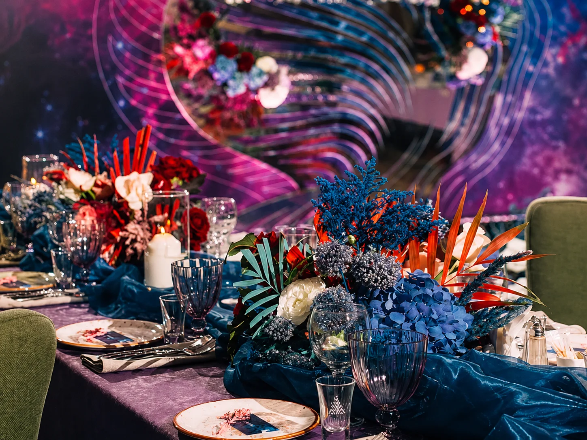
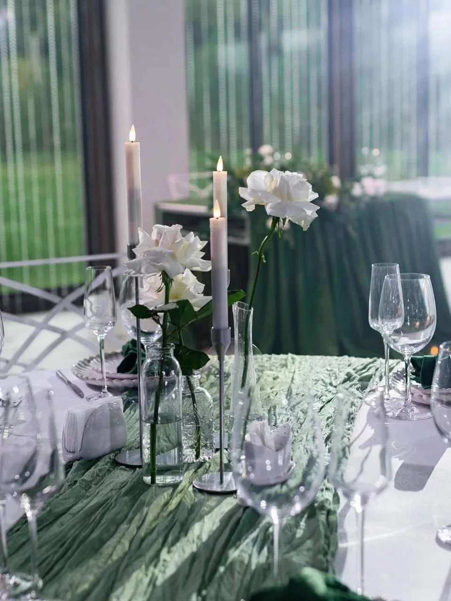
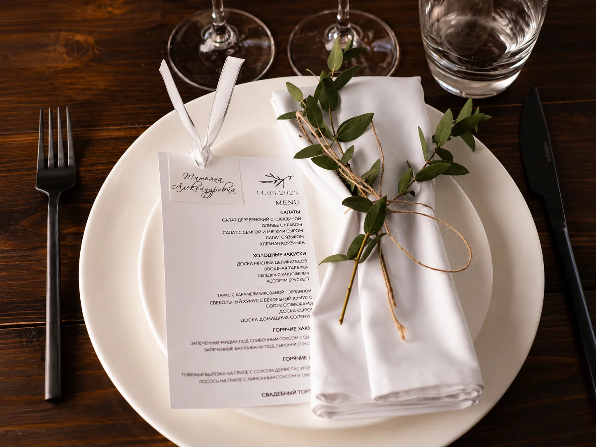
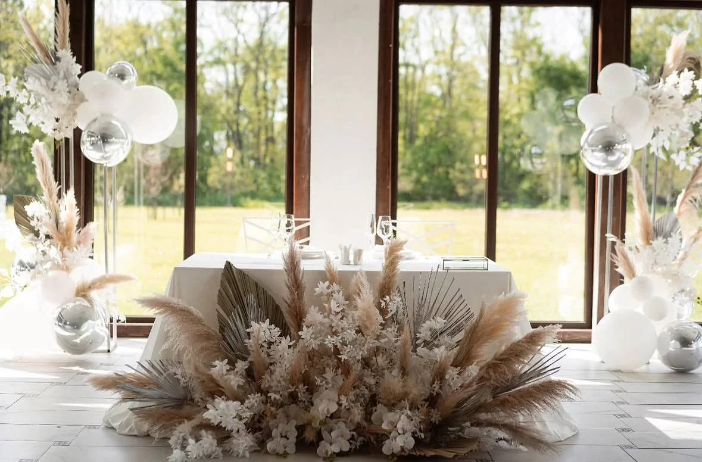

Что мы оформляем
Оформление зала - это работа со всем пространством, а не только с одной фотозоной. В кадр попадают стены, вход, столы, сцена, президиум, проходы, потолок, свет, вывески и даже пустые углы. Если эти элементы не связаны между собой, мероприятие выглядит случайным. Мы оцениваем зал как систему: где гости входят, куда смотрят во время программы, где фотографируются, где выступают ведущий и артисты, где стоит торт или подарки.
Для свадьбы акцент часто делается на президиуме, церемонии, столах гостей и фотозоне. Для юбилея важна зона поздравлений, сцена, место для семейных фото и комфортный фон рядом с именинником. Для корпоративного события мы добавляем брендированные элементы, логотипы, навигацию, пресс-волл и аккуратную интеграцию фирменных цветов. Для детского праздника учитываем безопасность, высоту элементов и свободное место для активности.
Мы можем оформить зал частично или полностью. Частичный вариант подходит, если интерьер уже сильный и нужно добавить только акценты. Полное оформление нужно, когда зал нейтральный, большой или не совпадает со стилем события. В смету входят материалы, конструкции, печать, текстиль, шары, свет, доставка, монтаж и демонтаж. Все позиции согласуются заранее.
Акценты в зале
Индивидуальный расчёт
Фотозона, входная группа или декор одной ключевой зоны.
Рассчитать стоимостьБанкетный зал
Индивидуальный расчёт
Несколько зон, столы, свет, печатные элементы, общая палитра.
Рассчитать стоимостьСобытие под ключ
Индивидуальный расчёт
Сценография, брендирование, техническая логистика и сопровождение.
Рассчитать стоимостьЭтапы работы
Сначала мы просим фото и видео зала, план рассадки, дату, время монтажа и список обязательных зон. Затем предлагаем варианты оформления: минимальный, оптимальный и расширенный. После утверждения бюджета готовим визуальную схему и список материалов. Если площадка сложная, выезжаем на замер или просим технические данные у администратора.
Монтаж обычно занимает от 2 до 8 часов. Важны доступ к лифту, парковка, время разгрузки, электричество и возможность работать до прихода гостей. После события команда демонтирует декор, вывозит конструкции и оставляет зал в согласованном состоянии.
Примеры оформления зала






FAQ
Вы оформляете только банкетные залы?
Нет. Работаем с ресторанами, лофтами, студиями, шатрами, офисами и выездными площадками.
Можно ли сделать оформление без цветов?
Да. Можно использовать панели, ткань, свет, шары, зеркала, печать, неон и брендированные детали.
Нужен ли замер?
Для маленькой зоны часто достаточно фото и размеров. Для сложного оформления зала замер желателен.